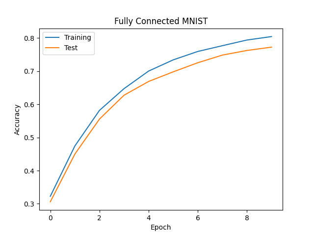
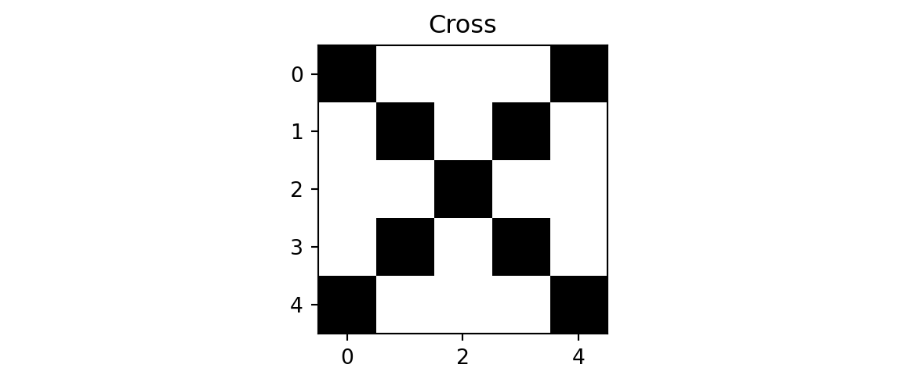
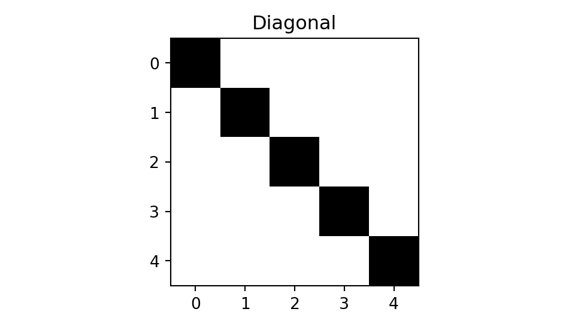
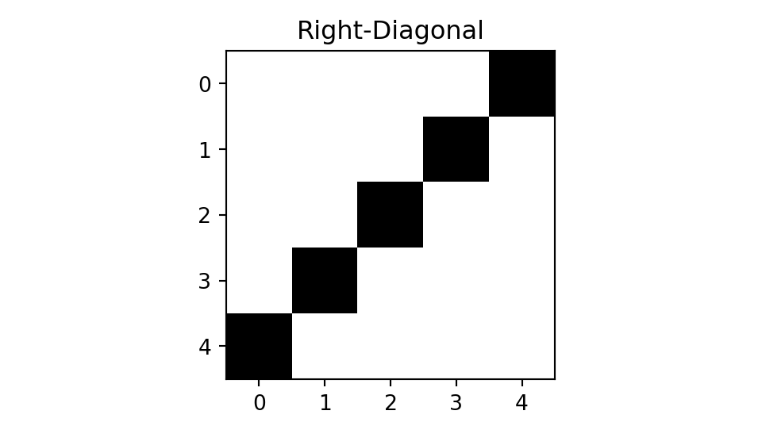
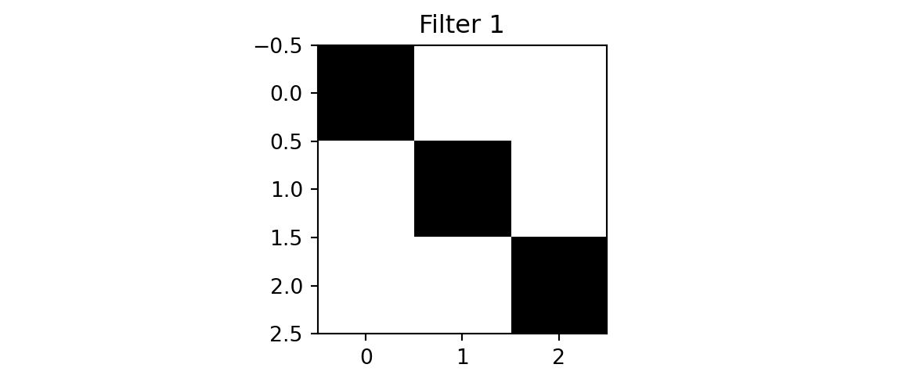
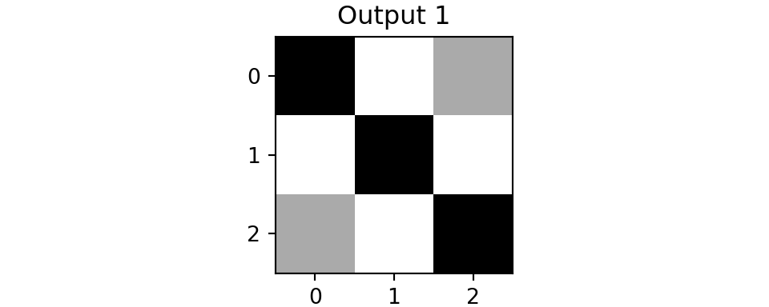
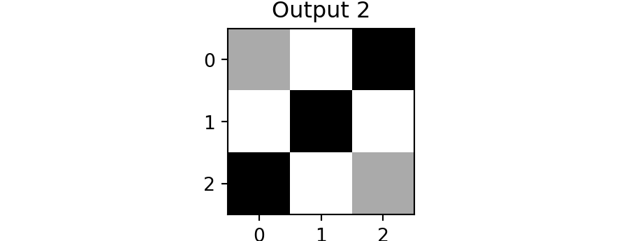
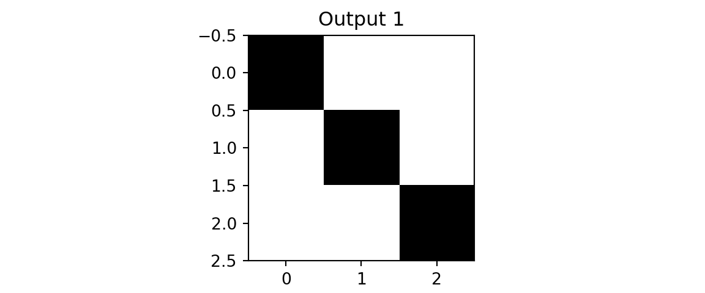
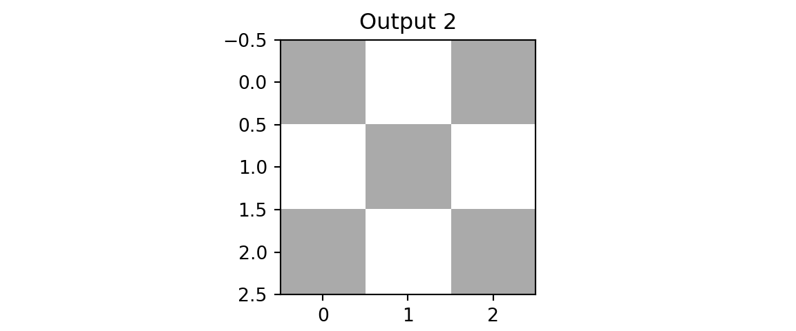

import gzip
import struct
import array
import numpy as np
import matplotlib.pyplot as plt
def parse_labels(filename):
with gzip.open(filename, "rb") as fh:
_ = struct.unpack(">II", fh.read(8))
return np.array(array.array("B", fh.read()), dtype=np.uint8)
def parse_images(filename):
with gzip.open(filename, "rb") as fh:
_, num_data, rows, cols = struct.unpack(">IIII", fh.read(16))
return np.array(array.array("B", fh.read()),dtype=np.uint8).reshape(num_data, rows, cols)
x = parse_images("../data/t10k-images-idx3-ubyte.gz")
y = parse_labels("../data/t10k-labels-idx1-ubyte.gz")
plt.imshow(x[0,:,:], cmap='gray'); plt.title(f'Label: {y[0]}'); plt.show()
plt.imshow(x[1,:,:], cmap='gray'); plt.title(f'Label: {y[1]}'); plt.show()
plt.imshow(x[2,:,:], cmap='gray'); plt.title(f'Label: {y[2]}'); plt.show()
plt.imshow(x[3,:,:], cmap='gray'); plt.title(f'Label: {y[3]}'); plt.show()22 Convolutional Neural Networks
“The face is not a simple pattern; it is a hierarchy of parts within parts within parts.” — David Marr, Vision (1982)
The foundational architecture for convolutional neural networks emerged in 1980, when Kunihiko Fukushima introduced the Neocognitron (Fukushima 1980)—a hierarchical neural network inspired by Hubel and Wiesel’s discoveries about simple and complex cells in the mammalian visual cortex. The Neocognitron was the first architecture to use convolutional layers for feature extraction and pooling layers for translation invariance, successfully recognizing handwritten Japanese characters through unsupervised learning. In 1988, Wei Zhang and colleagues applied backpropagation to train a simplified Neocognitron for alphabet recognition (Zhang et al. 1988), demonstrating that supervised learning could be effectively combined with the convolutional architecture. This combination of Fukushima’s architectural insights with gradient-based supervised learning became the foundation for modern CNNs, which now power everything from facial recognition on smartphones to autonomous vehicle perception systems.
This chapter introduces CNNs by first demonstrating the limitations of fully connected networks on image data, then building intuition for how convolutions extract local features. We will work with the MNIST dataset—the same handwritten digit recognition.
22.1 The MNIST Dataset
The MNIST dataset contains grayscale images of handwritten digits, each 28×28 pixels. It serves as the “Hello World” of computer vision—a standard benchmark that is simple enough to train quickly but complex enough to demonstrate the mechanics of image classification. The original dataset includes 60,000 training images and 10,000 test images. For simplicity, we will use only the test dataset in our examples. Each image is labeled with the digit it represents (0-9), making this a 10-class classification problem.
Image data is represented as a matrix of pixel values. A grayscale image of size 28×28 pixels is a matrix of shape (28, 28), where each entry contains an intensity value from 0 (black) to 255 (white). Color images add a third dimension for the red, green, and blue channels, resulting in shape (28, 28, 3). Figure 22.1 shows some sample MNIST digits.


22.2 Fully Connected Approach
A natural starting point for image classification is a fully connected neural network, which treats the image as a flat vector of independent pixels. The input to the model is a 28×28 matrix, which is reshaped into a vector of size 784. The output is a vector of size 10, representing the probability of each class. We split the 10,000 images using 80% for training and 20% for validation, shuffling before splitting to avoid bias.
We use jax, a library for numerical computing similar to numpy but designed for accelerators like GPUs and TPUs. Training a neural network requires two core computational capabilities: automatic differentiation to compute gradients, and efficient linear algebra—particularly matrix multiplication—to propagate signals through layers. jax provides both, along with a jit function for compiling operations to run efficiently on accelerators.
import numpy.random as npr
def flatten(x):
"""Flatten all but the first dimension of an ndarray."""
return np.reshape(x, (x.shape[0], -1))
def one_hot(x, k, dtype=np.float32):
"""Create a one-hot encoding of x of size k."""
return np.array(x[:, None] == np.arange(k), dtype)
rng = npr.RandomState(0)
n = x.shape[0]
perm = rng.permutation(n)
traini = perm[0:8000]
testi = perm[8000:n]
train_images = flatten(x[traini,:,:])/ np.float32(255.)
test_images = flatten(x[testi,:,:])/ np.float32(255.)
train_labels = one_hot(y[traini],10)
test_labels = one_hot(y[testi],10)The model is trained by minimizing the cross-entropy loss and we use accuracy to evaluate the model.
def loss(params, batch):
inputs, targets = batch
preds = predict(params, inputs)
return -jnp.mean(jnp.sum(preds * targets, axis=1))
def accuracy(params, batch):
inputs, targets = batch
target_class = jnp.argmax(targets, axis=1)
predicted_class = jnp.argmax(predict(params, inputs), axis=1)
return jnp.mean(predicted_class == target_class)Finally, we implement the feed-forward network with \(\tanh\) activation. The last layer is a linear layer with the \(z_i - \ln \left(\sum_j e^{z_j}\right)\) function applied component-wise. Thus, our predict function simply returns the logarithm of the probability of each class. Typically we would use the softmax function to compute the probability of each class. Given a vector of logits \(z\), the softmax function is defined as follows: \[
\sigma(z)_i = \frac{e^{z_i}}{\sum_{j=1}^{K}e^{z_j}}
\] However, computation of the exponential of large numbers can lead to numerical instability (overflow). Instead, we work with the logarithm of the softmax function, which is more numerically stable: \[
\ln\sigma(z)_i = z_i - \ln\sum_{j=1}^{K}e^{z_j}
\] This is exactly what we need to compute the cross-entropy loss.
def predict(params, inputs):
activations = inputs
for w, b in params[:-1]:
outputs = jnp.dot(activations, w) + b
activations = jnp.tanh(outputs)
final_w, final_b = params[-1]
logits = jnp.dot(activations, final_w) + final_b
return logits - logsumexp(logits, axis=1, keepdims=True)from jax import jit, grad
import jax.numpy as jnp
from jax.scipy.special import logsumexp
layer_sizes = [784, 1024, 1024, 10]
param_scale = 0.1
step_size = 0.001
num_epochs = 10
batch_size = 128
num_train = train_images.shape[0]
num_complete_batches, leftover = divmod(num_train, batch_size)
num_batches = num_complete_batches + bool(leftover)
def init_random_params(scale, layer_sizes, rng=npr.RandomState(0)):
return [(scale * rng.randn(m, n), scale * rng.randn(n))
for m, n, in zip(layer_sizes[:-1], layer_sizes[1:])]
def data_stream():
while True:
perm = rng.permutation(num_train)
for i in range(num_batches):
batch_idx = perm[i * batch_size:(i + 1) * batch_size]
yield train_images[batch_idx], train_labels[batch_idx]
batches = data_stream()
@jit
def update(params, batch):
grads = grad(loss)(params, batch)
return [(w - step_size * dw, b - step_size * db) for (w, b), (dw, db) in zip(params, grads)]
params = init_random_params(param_scale, layer_sizes)
log = np.empty((2,num_epochs))
for epoch in range(num_epochs):
for _ in range(num_batches):
params = update(params, next(batches))
train_acc = accuracy(params, (train_images, train_labels))
test_acc = accuracy(params, (test_images, test_labels))
log[:,epoch] = [train_acc,test_acc,]
print(f"Training set accuracy {train_acc}")
print(f"Test set accuracy {test_acc}")
plt.plot(range(num_epochs),log[0,:]);
plt.plot(range(num_epochs),log[1,:]);The final architecture is shown in Figure 22.2 and achieves an accuracy of 77% on the test set and 80% on the training set.
graph LR
subgraph Input["Input Layer"]
I[784 nodes<br/>28×28 flattened image]
end
subgraph Hidden1["Hidden Layer 1"]
H1[1024 nodes<br/>tanh activation]
end
subgraph Hidden2["Hidden Layer 2"]
H2[1024 nodes<br/>tanh activation]
end
subgraph Output["Output Layer"]
O[10 nodes<br/>log-softmax]
end
I -->|W1: 784×1024<br/>b1: 1024| H1
H1 -->|W2: 1024×1024<br/>b2: 1024| H2
H2 -->|W3: 1024×10<br/>b3: 10| O
O --> P[Predicted digit<br/>0-9]
style Input fill:#e1f5ff
style Hidden1 fill:#fff4e1
style Hidden2 fill:#fff4e1
style Output fill:#e8f5e9
style P fill:#f3e5f5
Figure 22.3 shows the accuracy of the fully connected network on the test and training sets from 0 to 10 epochs.

We can see that even simple fully connected network achieves reasonable accuracy, but it has fundamental limitations. It treats each pixel independently, ignoring the spatial structure of the image—the fact that neighboring pixels are related. A fully connected layer connecting a 28$$28 image to 1024 hidden units requires over 800,000 parameters, most of which are redundant.
22.3 Convolutions
A fully connected layer connecting a 28$$28 image to 1024 hidden units requires over 800,000 parameters, most of which are redundant. Convolutional neural networks address these limitations by exploiting two key properties of images:
- Local connectivity: Useful features (edges, textures, shapes) are local—they depend on small neighborhoods of pixels, not the entire image.
- Translation invariance: A feature detector useful in one part of an image is likely useful in other parts.
Key Concepts
A filter (also called a kernel) is a small matrix of learned weights—typically 3×3 or 5×5—that extracts local features from an image by computing a weighted sum of pixel values within a sliding window. When the filter’s pattern aligns with a pattern in the image, the dot product produces a high activation; when they don’t match, the activation is low.
- Kernel size: The dimensions of the filter (e.g., 3×3). Odd sizes are preferred so the filter has a well-defined center.
- Receptive field: The region of the input image that influences a single output value.
- Stride: The number of pixels by which the filter shifts at each step. A stride of 1 moves pixel-by-pixel; a stride of 2 skips every other position, reducing the output size.
- Padding: Adding zeros around the border of the input to control the output size. “Same” padding preserves the input dimensions; “valid” padding uses no padding, shrinking the output.
While mathematically identical to kernel smoothing in statistics, convolutions in deep learning differ in one critical aspect: the kernel weights are learned from data rather than predefined.
Let us look at a one-dimensional example. Suppose we have a one-dimensional input signal \(x\) and a one-dimensional filter \(w\). The convolution of \(x\) and \(w\) is defined as follows: \[ (x \ast w)(t) = \sum_{i=0}^{h}x(t+i)w(i), \] where \(h\) is the size of the filter. The convolution operation is used to filter the input signal.
To illustrate this, consider a simple example where we apply a moving average filter to a noisy sinusoidal signal. We generate a sine wave over the interval \([0, 10]\) and add Gaussian noise to simulate realistic measurement errors. The filter uses a uniform window of size 10, where each weight equals \(1/10\), effectively computing the local average of the signal. When we convolve this filter with the noisy signal, each output point becomes the weighted average of its neighboring input points, which smooths out the random fluctuations while preserving the underlying periodic structure. Figure 22.4 shows the original noisy signal in light gray and the smoothed result in black, demonstrating how convolution effectively extracts the signal from noise by exploiting local spatial structure.
import matplotlib.pyplot as plt
from jax import random
import jax.numpy as jnp
import numpy as np
key = random.PRNGKey(1701)
x = jnp.linspace(0, 10, 500)
y = jnp.sin(x) + 0.2 * random.normal(key, shape=(500,))
window = jnp.ones(10) / 10
y_smooth = jnp.convolve(y, window, mode='same')
plt.plot(x, y, 'lightgray')
plt.plot(x, y_smooth, 'black');
A Toy Example
To build intuition, consider a simple example with 5×5 images and 3×3 filters. We will classify images into three classes: cross, diagonal, and right-diagonal.
img = np.genfromtxt("../data/img-x.tsv", delimiter="\t")
imgx = img[0:5,:]
imgd = img[5:10,:]
imgrd = img[10:15,:]
plt.imshow(imgx, cmap='binary'); plt.title(f'Cross'); plt.show();
plt.imshow(imgd, cmap='binary'); plt.title(f'Diagonal'); plt.show();
plt.imshow(imgrd, cmap='binary'); plt.title(f'Right-Diagonal'); plt.show();


We will use two filters.
f = np.genfromtxt("../data/img-filter.tsv", delimiter="\t")
f1 = f[0:3,:]
f2 = f[3:6,:]
plt.imshow(f1, cmap='binary'); plt.title(f'Filter 1'); plt.show();
plt.imshow(f2, cmap='binary'); plt.title(f'Filter 2'); plt.show();

The first filter has 1s along its main diagonal and 0s elsewhere—when placed over a matching diagonal line in the image, the dot product is maximized. The second filter detects the opposite diagonal. This is why convolutions are effective feature detectors: they respond strongly when their pattern matches what’s in the image.
def conv(img, f):
out = np.zeros((3,3))
for i in range(3):
for j in range(3):
out[i,j] = np.sum(img[i:i+3,j:j+3]*f)
return out
def maxpool(img):
return np.max(img)
def fc(x, w, b):
return jnp.dot(w,x) + b
def softmax(x):
return jnp.exp(x) / jnp.sum(jnp.exp(x))
def cnn(img, f1, f2):
out1 = conv(img,f1)
out2 = conv(img,f2)
x = np.array([maxpool(out1), maxpool(out2)])
w = np.array([[1,0],[0,1],[0.6,0.6]])
b = 0
z = fc(x,w,b)
return softmax(z),out1,out2
zx, outx1, outx2 = cnn(imgx,f1,f2)
plt.imshow(outx1, cmap='binary'); plt.title(f'Output 1'); plt.show();
plt.imshow(outx2, cmap='binary'); plt.title(f'Output 2'); plt.show();

We see that both outputs have pixels with high values. However, when we apply the same two filters to the diagonal image, we get different results.
zd, outd1, outd2 = cnn(imgd,f1,f2)
plt.imshow(outd1, vmin=0,vmax=3,cmap='binary'); plt.title(f'Output 1'); plt.show();
plt.imshow(outd2, vmin=0,vmax=3, cmap='binary'); plt.title(f'Output 2'); plt.show();

The result of applying the second filter to the diagonal image is a matrix close to zero—the filter pattern doesn’t match the image content. Applying the second filter to the diagonal image yields near-zero activations, illustrating that the filter remains dormant when its specific search pattern is absent. This observation motivates the pooling layer: by retaining only the maximum activation within each region, the network preserves the presence of a detected feature while discarding its exact location. This provides a degree of translation invariance. Finally, we concatenate the pooled outputs and apply a fully connected layer for classification.
zrd, outrd1, outrd2 = cnn(imgrd,f1,f2)
print(f'Cross: {zx}')
## Cross: [0.26163495 0.26163495 0.47673005]
print(f'Diagonal: {zd}')
## Diagonal: [0.5937724 0.08035836 0.32586923]
print(f'Right-Diagonal: {zrd}')
## Right-Diagonal: [0.08035836 0.5937724 0.32586923]The model correctly predicted all three classes. This toy example illustrates the core CNN pipeline: convolutions extract local features, pooling provides spatial invariance, and fully connected layers perform classification.
22.4 CNN for MNIST
Now we apply these concepts to MNIST using PyTorch. While we used JAX for the fully connected network to show the low-level mechanics of gradients and matrix operations, we switch to PyTorch here to demonstrate a high-level deep learning framework. PyTorch provides powerful abstractions like nn.Conv2d and nn.Module that make building and debugging complex architectures like CNNs more intuitive, and it effectively handles the boilerplate of autograd and parameter management.
The architecture follows the same pattern: convolutional layers extract hierarchical features, pooling reduces spatial dimensions, and fully connected layers produce class probabilities.
import torch
import torch.nn as nn
from torch.nn import functional as F
x = parse_images("../data/t10k-images-idx3-ubyte.gz")
y = parse_labels("../data/t10k-labels-idx1-ubyte.gz")
class Net(nn.Module):
def __init__(self):
super(Net, self).__init__()
self.conv1 = nn.Conv2d(1, 32, 3, 1) # 1 input channel (grayscale), 32 output channels, 3x3 kernel
self.conv2 = nn.Conv2d(32, 64, 3, 1) # 32 input channels, 64 output channels
# Note: PyTorch defaults to valid padding (no padding).
# After conv1 (28->26), conv2 (26->24), pool (24->12): 64 channels × 12 × 12 = 9216
self.fc1 = nn.Linear(9216, 128)
self.fc2 = nn.Linear(128, 10)
def forward(self, x):
x = self.conv1(x)
x = F.relu(x)
x = self.conv2(x)
x = F.relu(x)
x = F.max_pool2d(x, 2)
x = torch.flatten(x, 1)
x = self.fc1(x)
x = F.relu(x)
x = self.fc2(x)
output = F.log_softmax(x, dim=1)
return output
def data_stream():
perm = rng.permutation(num_train)
while True:
for i in range(num_batches):
batch_idx = perm[i * batch_size:(i + 1) * batch_size]
yield torch.from_numpy(x[batch_idx,:,:]/ np.float32(255.))[:, None, :, :], torch.from_numpy(y[batch_idx])
def train(model, optimizer):
model.train()
batches = data_stream()
for epoch in range(num_epochs):
for _ in range(num_batches):
optimizer.zero_grad()
data, target = next(batches)
output = model(data)
loss = F.nll_loss(output, target)
loss.backward()
optimizer.step()
print(f"Epoch {epoch}: Loss {loss.item()}")
model = Net()
optimizer = torch.optim.Adadelta(model.parameters(), lr=0.1)
train(model, optimizer)The CNN uses the Adadelta optimizer, an adaptive learning rate method that adjusts step sizes based on gradient history. Unlike vanilla SGD (which we used for the fully connected network), Adadelta typically requires less hyperparameter tuning.
model.eval()
with torch.no_grad():
test_data = torch.from_numpy(x[testi,:,:]/ np.float32(255.))[:, None, :, :]
test_targets = torch.from_numpy(y[testi])
output = model(test_data)
pred = output.argmax(dim=1)
correct = pred.eq(test_targets).sum().item()
accuracy = 100. * correct / len(testi)
print(f"CNN Test Accuracy: {accuracy:.1f}%")The CNN architecture is shown in Figure 22.5.
flowchart TB
subgraph ConvLayers["Convolutional Layers"]
direction LR
I["Input<br/>1 × 28 × 28<br/>Grayscale MNIST"]
C1["Conv2d: 1→8<br/>kernel: 3×3<br/>8 × 26 × 26"]
R1["ReLU"]
P1["MaxPool2d<br/>2×2<br/>8 × 13 × 13"]
C2["Conv2d: 8→16<br/>kernel: 3×3<br/>16 × 11 × 11"]
R2["ReLU"]
P2["MaxPool2d<br/>2×2<br/>16 × 5 × 5"]
F["Flatten<br/>400 features"]
I --> C1 --> R1 --> P1 --> C2 --> R2 --> P2 --> F
end
subgraph FCLayers["Fully Connected<br/>Classification"]
direction LR
FC1L["Linear<br/>400 → 32"]
R3["ReLU"]
FC2L["Linear<br/>32 → 10"]
LS["Log-Softmax"]
O["Output<br/>10 classes<br/>Digits 0-9"]
FC1L --> R3 --> FC2L --> LS --> O
end
ConvLayers --> FCLayers
%% Styling
style I fill:#e1f5ff,stroke:#01579b,stroke-width:2px,color:#000
style C1 fill:#fff9c4,stroke:#fbc02d,stroke-width:2px,color:#000
style C2 fill:#fff9c4,stroke:#fbc02d,stroke-width:2px,color:#000
style FC1L fill:#ffe0b2,stroke:#f57c00,stroke-width:2px,color:#000
style FC2L fill:#ffe0b2,stroke:#f57c00,stroke-width:2px,color:#000
style R1 fill:#fce4ec,stroke:#c2185b,stroke-width:2px,color:#000
style R2 fill:#fce4ec,stroke:#c2185b,stroke-width:2px,color:#000
style R3 fill:#fce4ec,stroke:#c2185b,stroke-width:2px,color:#000
style P1 fill:#e0f2f1,stroke:#00695c,stroke-width:2px,color:#000
style P2 fill:#e0f2f1,stroke:#00695c,stroke-width:2px,color:#000
style F fill:#e0f2f1,stroke:#00695c,stroke-width:2px,color:#000
style LS fill:#e8f5e9,stroke:#2e7d32,stroke-width:2px,color:#000
style O fill:#e8f5e9,stroke:#2e7d32,stroke-width:2px,color:#000
style ConvLayers fill:#fafafa,stroke:#ccc,stroke-width:2px,color:#000
style FCLayers fill:#fafafa,stroke:#ccc,stroke-width:2px,color:#000
This model achieves an accuracy of 93% on the test set, compared to 77% for the fully connected network. More importantly, it uses far fewer parameters! The number of parameters in the model is 14k, compared to 800k for the fully connected network. The convolutional layers share weights across spatial positions rather than learning separate weights for each pixel location. This parameter efficiency, combined with the inductive bias toward local and translation-invariant features, explains why CNNs have become the dominant architecture for computer vision tasks.
22.5 Summary
Convolutional neural networks exploit the spatial structure of images through three key mechanisms:
- Convolutional layers apply learned filters that detect local patterns, sharing weights across the entire image.
- Pooling layers reduce spatial dimensions while providing invariance to small translations.
- Hierarchical feature learning: early layers detect simple features (edges, textures); deeper layers combine these into complex patterns (shapes, objects).
The CNN architecture we built achieves significantly higher accuracy than the fully connected network while using far fewer parameters—the convolutional layers share weights across spatial positions rather than learning separate weights for each pixel location. This parameter efficiency, combined with the inductive bias toward local and translation-invariant features, explains why CNNs have become the dominant architecture for computer vision tasks.